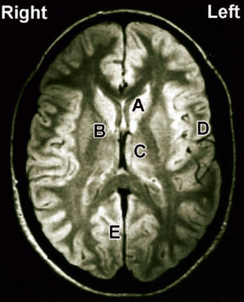

A 58-year-old woman comes to the physician because of a 2-month history of intense pain on the right side of her body. She describes the pain as a constant, burning sensation of variable intensity. Over-the-counter medications have not resolved her pain. Six months ago, she sustained a cerebral infarction accompanied by loss of sensation over the right side. Neurologic examination shows loss of sensation to light touch and proprioception on the right side. Light touch of the skin elicits pain. No motor deficits were detected. The most likely cause of this patient's condition is a lesion in which of the following labeled areas in the MRI of a normal brain?
Explanation & Educational Objective
Choice C identifies the thalamus, a gray matter region with diverse roles including relaying sensory and motor information and mediating alertness. The spinothalamic tract, which mediates the sensation of pain, feeds into the thalamus. Cerebrovascular accidents (CVAs) occur because of ischemic or hemorrhagic loss of blood supply to the brain. If the thalamus is infarcted, patients may lose the ability to accurately interpret sensory information, and if the spinothalamic tract is affected, may also experience a centralized poststroke pain syndrome called thalamic pain syndrome. Thalamic pain syndrome may occur in the acute poststroke phase or months or years after a stroke. It is characterized by an initial loss of sensation or paresthesia followed by burning pain with allodynia. These sensory symptoms typically involve the entire contralateral half of the body, but in some cases are poorly localized. Treatment may involve pharmacological strategies (eg, tricyclic antidepressants, anticonvulsants) and nonpharmacologic strategies (eg, physical therapy, cognitive-behavioral therapy). Incorrect Answers: A, B, D, and E. Choice A identifies the caudate nucleus. The caudate nucleus is a basal ganglia structure located directly lateral to the lateral ventricles that modulates motor control along with higher order functions, such as learning, memory, motivation, and emotion. Lesions of the caudate nucleus lead to disinhibition and agitation. Choice B identifies the internal capsule. The internal capsule primarily contains the descending corticospinal tract, though it also contains axons of various additional pathways. Internal capsule lacunar infarcts may present with purely motor deficits. Choice D identifies the Broca convolution. In a CVA, lesions involving this area can result in expressive (Broca) aphasia. Choice E identifies the primary visual cortex in the occipital lobe. The role of this brain area is to process visual information, not light touch, proprioception, or pain.
Thalamic pain syndrome is a centralized poststroke pain syndrome caused by a thalamic infarction characterized by loss of sensation, burning pain, and allodynia. These sensory symptoms typically involve the entire contralateral half of the patient's body, but in some cases, are poorly localized.